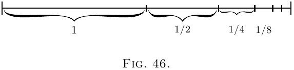
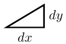

Inclinações de curvas, e as próprias curvas.
Façamos uma pequena investigação preliminar sobre as inclinações das curvas. Pois vimos que diferenciar uma curva significa achar uma expressão para sua inclinação (ou para suas inclinações em pontos diferentes). Podemos realizar o processo inverso de reconstruir a curva inteira se a inclinação (ou as inclinações) nos for prescrita?
Volte ao caso (2) aqui. Temos a mais simples das curvas, uma reta inclinada com a equação \[ y = ax+b. \]
Sabemos que aqui $b$ representa a altura inicial de
$y$ quando $x= 0$, e que $a$, que é o mesmo que $\dfrac{dy}{dx}$,
é a “inclinação” da reta. A reta tem inclinação
constante. Ao longo dela os triângulos elementares
 têm a mesma proporção entre altura e base.
Suponha que tomássemos os $dx$ e $dy$ de magnitude
finita, de modo que $10$ $dx$ formassem uma polegada;
então haveria dez triângulos pequeninos como
Agora, suponha que nos ordenassem reconstruir a
“curva,” partindo apenas da informação de que
$\dfrac{dy}{dx} = a$. O que poderíamos fazer? Ainda tomando
os pequenos $d$ de tamanho finito, poderíamos desenhar
$10$ deles, todos com a mesma inclinação, e depois
juntá-los, ponta com ponta, assim:
E, como a inclinação é a mesma para todos, eles se
juntariam para formar, como na Figura 48, uma reta
inclinada com a inclinação correta $\dfrac{dy}{dx} = a$. E quer
tomemos os $dy$ e $dx$ finitos ou infinitamente
pequenos, como são todos iguais, claramente
$\dfrac{y}{x} = a$, se contarmos $y$ como o total de todos os
$dy$, e $x$ como o total de todos os $dx$. Mas onde
devemos colocar essa reta inclinada? Devemos partir
da origem $O$, ou mais acima? Como a única informação
que temos é a da inclinação, não temos instrução
sobre a altura particular acima de $O$; de fato a
altura inicial fica indeterminada. A inclinação será
a mesma, qualquer que seja a altura inicial. Portanto
arriscamos um chute do que possa ser pedido e
começamos a reta inclinada a uma altura $C$ acima de
$O$. Isto é, temos a equação
\[
y = ax + C.
\]
Fica evidente agora que, neste caso, a constante
acrescentada significa o valor particular que $y$ tem
quando $x = 0$.
Tomemos agora um caso mais difícil, o de uma linha
cuja inclinação não é constante, mas sobe cada vez
mais. Suponhamos que a inclinação para cima fique
cada vez maior em proporção ao crescimento de $x$. Em
símbolos: Então o melhor é começar calculando alguns valores
da inclinação em diferentes valores de $x$, e também
desenhar pequeninos diagramas deles.
Quando